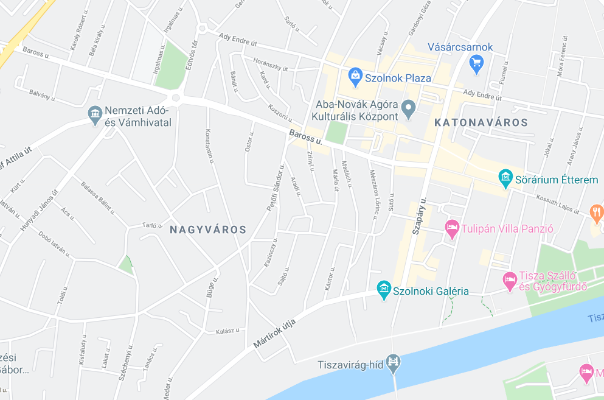

Elérhetőségünk
Címünk
5000 Szolnok, Kaftán u. 9.
Telefonszámunk
06 56 245 657
Nyitvatartás
- Hétfő: 10:00-20:00
- Kedd: 10:00-20:00
- Szerda: 10:00-20:00
- Csütörtök: 10:00-20:00
- Péntek: 10:00-20:00
- Szombat: 10:00-22:00
- Vasárnap: 10:00-22:00
Megközelítés
Autóvak
Tömegközlekedéssel
